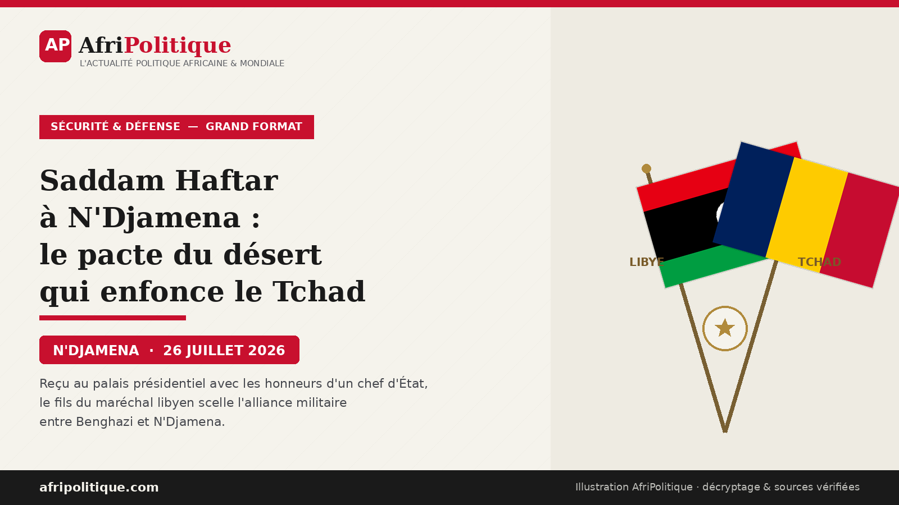

Il n'était pas chef d'État, mais il en a reçu les honneurs. En débarquant à N'Djamena ce 26 juillet 2026, le général Saddam Haftar, vice-commandant de l'Armée nationale libyenne (ANL) et fils du maréchal Khalifa Haftar, a été accueilli au palais présidentiel par Mahamat Idriss Déby Itno, dit « Mahamat Kaka ». Un fils de maréchal, adoubé comme un homologue par le maître du Tchad : la scène, rapportée le jour même par la presse régionale, dit à elle seule le poids qu'a pris le clan de Benghazi dans les choix extérieurs de N'Djamena. Ce n'est pas une visite de courtoisie. C'est un signal.
Le moment n'a rien d'anodin. À plus de mille kilomètres de là, dans le grand Sud libyen, les forces de Haftar patinent depuis le début de l'année face à une insurrection qui refuse de plier. Et si le maître de Benghazi envoie son fils frapper à la porte du palais rose, c'est qu'il a besoin de N'Djamena. La vraie question n'est plus de savoir si le Tchad est partie prenante de cette guerre — il l'est déjà — mais jusqu'où Mahamat Déby est prêt à s'y enfoncer.
La visite en bref
- QuiSaddam Haftar, vice-commandant de l'ANL, fils du maréchal Khalifa Haftar
- Reçu parMahamat Idriss Déby Itno, président du Tchad
- OùN'Djamena — accueil aux honneurs habituellement réservés à un chef d'État
- ContexteEnlisement des forces Haftar dans le Fezzan face à la Chambre d'opérations pour la libération du Sud
- Précédent1ᵉʳ août 2025 : première réception au palais présidentiel ; nov. 2025 : force conjointe Tchad-Libye sous supervision de Saddam Haftar
Dans le protocole, rien n'est jamais gratuit. Recevoir un vice-commandant d'armée étrangère — un homme qui ne détient ni la qualité de chef d'État ni le rang qui l'autoriserait à ce traitement — avec le faste réservé aux dirigeants souverains, c'est envoyer un message que personne, à Tripoli, au Caire ou à Abou Dhabi, ne peut manquer de lire. La mise en scène traduit une hiérarchie officieuse : dans la politique extérieure tchadienne, le clan Haftar et ses parrains émiratis pèsent désormais lourd, peut-être plus lourd que bien des chancelleries.
Ce n'est pas la première fois — et c'est tout l'enjeu. En un an, Saddam Haftar a été reçu à deux reprises à N'Djamena avec les mêmes égards. Une première fois le 1ᵉʳ août 2025, accueilli au palais présidentiel par Mahamat Déby, qui saluait alors le rôle du commandement libyen dans la « stabilité régionale ». Cette visite précédait de trois mois l'annonce, le 17 novembre 2025 par l'agence APAnews, de la création d'une force conjointe entre l'armée tchadienne et les forces de l'Est libyen, placée sous la supervision directe de Saddam. La seconde survient ce 26 juillet 2026, en plein embrasement du Fezzan. Deux rendez-vous, deux moments choisis : le premier scelle l'alliance, le second vient la renflouer au moment où elle vacille sur le terrain.
Car si Benghazi a besoin de N'Djamena, l'inverse est tout aussi vrai — et c'est ce qui donne à ces retrouvailles leur vraie portée. Pour le pouvoir tchadien, l'alliance avec le clan Haftar n'est pas qu'une solidarité entre régimes militaires : c'est un instrument de sécurité intérieure. Plusieurs mouvements rebelles tchadiens ont trouvé refuge dans le sud libyen, où l'agence APAnews signalait dès novembre 2025 des tentatives de regroupement « suscitant des inquiétudes à N'Djamena ». En s'adossant à l'ANL, Mahamat Déby se donne les moyens de traquer son opposition armée jusque sur le sol libyen — un service que Khalifa Haftar est en position de rendre, en échange de soldats, de profondeur stratégique et d'un accès au grand désert tchadien. C'est ce troc, autant que la fraternité affichée, qui se joue derrière les honneurs du perron.
Reste que la nature de cet échange a été mise à nu par un document que N'Djamena aurait préféré voir rester dans un tiroir : le rapport du panel d'experts de l'ONU sur la Libye.
Le Fezzan en flammes : une guerre que Haftar ne gagne pasPour saisir l'enjeu de cette visite, il faut descendre dans le Fezzan, ce désert d'hydrocarbures du sud-ouest libyen où se joue depuis janvier une guerre discrète mais tenace. C'est là qu'est née, au début de 2026, la Chambre d'opérations pour la libération du Sud (COLSL), une insurrection conduite par un chef de guerre toubou, Mahamat Wardougou, qui conteste la mainmise du clan Haftar sur la région et ses rentes. Depuis, les accrochages se succèdent sur les postes frontaliers face au Niger et au Tchad.
Le 12 juillet 2026, la COLSL a franchi un cap en lançant l'opération « Arendiga » contre un barrage menant à la base aérienne d'Al-Wigh, à l'extrême sud de la Libye, tout près des frontières nigérienne et tchadienne — une base où stationnent aussi des éléments russes de l'Africa Corps. Les assaillants ont filmé l'assaut, revendiqué la capture d'une quinzaine de soldats de l'ANL et la saisie de matériel. La base n'est pas tombée, mais le message est passé : le contrôle de Haftar sur le grand Sud est plus mince qu'annoncé. Deux jours plus tard, l'ANL ripostait avec l'opération « Chasse aux scorpions » et dépêchait Saddam Haftar en personne sur le front. C'est cette guerre-là, qui ne tourne pas à son avantage, qu'il est venu plaider à N'Djamena.
Carte AfriPolitique — Deux géographies distinctes. À l'ouest, le Fezzan contesté où la COLSL harcèle l'ANL. À l'est, le corridor Benghazi → Koufra → Al-Atrun vers le Darfour, documenté par le panel d'experts de l'ONU comme chaîne d'approvisionnement des FSR. Fond schématique à but éditorial ; tracés indicatifs, non contractuels. Sources : rapport final du panel d'experts sur la Libye (24 mars 2026), IMS, RFI, Middle East Eye.
Le Tchad, belligérant plus que médiateurOn aurait tort de voir dans le Tchad un simple voisin soucieux de sécuriser ses frontières. N'Djamena est déjà un acteur armé du conflit. En février 2026, une colonne militaire tchadienne engagée aux côtés des forces de Haftar contre les hommes de Wardougou est tombée dans une embuscade près de la frontière nigérienne : une dizaine de morts dans les rangs tchadiens, plusieurs soldats probablement capturés. L'information, rapportée par le CEDPE, centre d'études basé à N'Djamena, n'a jamais donné lieu à la moindre communication officielle. Des soldats tchadiens meurent dans une guerre libyenne, et l'État se tait.
Cette discrétion en dit long sur une méthode. Le régime tchadien a fait des forces mixtes un instrument régulier de sa politique régionale — avec la Libye, mais aussi avec le Soudan et la Centrafrique. Chacun de ces dispositifs transforme une querelle de voisinage en engagement national, sans débat public ni bilan rendu aux Tchadiens. La vague de nominations par décret qui a réorganisé la force conjointe Tchad-Libye le 7 mai 2026 ressemble moins à l'entretien d'un outil qui fonctionne qu'à la réparation d'un dispositif qui vient d'encaisser des revers.
C'est ici que le dossier bascule du fait divers militaire à l'affaire d'État. Le 24 mars 2026, le panel d'experts de l'ONU sur la Libye publiait son rapport final. Ses conclusions sont accablantes pour Benghazi : il relie le commandement de Khalifa Haftar et les forces de son fils Saddam à la contrebande pétrolière, à la fuite de capitaux et à la fourniture d'armes aux Forces de soutien rapide (FSR), les paramilitaires de Mohamed « Hemedti » Dagalo accusés d'atrocités de masse au Darfour.
Au cœur de cette mécanique, un nom : le bataillon Subul Al-Salam, que le panel identifie comme un maillon clé de la chaîne logistique reliant la Libye au Soudan — transport de combattants, d'armes, accès au carburant, le long du corridor qui part des ports de l'Est libyen, passe par Koufra et Al-Atrun, et rejoint le Darfour. Or c'est précisément à l'administration des gardes-frontières liée à ce bataillon que Saddam Haftar a confié, en novembre 2025, les opérations de la force conjointe avec l'armée tchadienne.
Le recoupement est vertigineux : N'Djamena a adossé son dispositif frontalier nord à l'unité que l'ONU désigne comme un rouage du ravitaillement des FSR. Ce n'est plus une hypothèse de terrain, c'est la rencontre de deux sources publiques et indépendantes l'une de l'autre. En recevant Saddam Haftar avec les honneurs, Mahamat Déby ne serre pas seulement la main d'un allié militaire : il adoube l'architecte d'un réseau que les Nations unies pointent du doigt.
Amdjarass, le pont aérien qui embarrasse N'DjamenaLe fil émirati resserre encore l'étau. À Amdjarass, fief natal de la famille Déby dans l'est du Tchad, se trouve un aéroport où des experts de l'ONU ont recensé vingt-quatre Iliouchine Il-76 en 2024, et où des enquêtes ont dénombré au moins quatre-vingt-six vols en provenance des Émirats arabes unis — à une cinquantaine de kilomètres seulement de la frontière soudanaise. Abou Dhabi dément fermement et présente ces rotations comme des vols humanitaires. Mais pour de nombreuses enquêtes, dont celle de l'organisation The Sentry en novembre 2025, la même main émiratie relie le carburant détourné par Koufra, sous la houlette de Saddam Haftar, et l'effort de guerre des FSR.
Additionnées, ces pièces dessinent un triangle : Abou Dhabi finance et arme, Benghazi achemine, N'Djamena héberge et sécurise. Le Tchad n'est pas le cerveau de ce dispositif, mais il en est un pivot géographique indispensable. Et la visite de Saddam Haftar, dans ce contexte, prend un relief inquiétant : que vient-il vraiment négocier ? Un appui militaire renforcé pour inverser le rapport de force dans le Fezzan ? Un accès élargi au carburant pour le théâtre soudanais ? Des facilités logistiques nouvelles ? Les communiqués officiels n'en disent rien. La question, elle, reste entière — et elle mérite d'être posée.
Chronologie d'un engrenage
- Août 2025Mahamat Déby reçoit Saddam Haftar au palais présidentiel de N'Djamena
- Nov. 2025Le camp Haftar annonce une force conjointe avec l'armée tchadienne, sous supervision de Saddam Haftar
- Janv. 2026Naissance de la COLSL, insurrection toubou contre l'ANL dans le Fezzan
- Fév. 2026Embuscade contre une colonne tchadienne : une dizaine de morts, plusieurs captures (CEDPE)
- 24 mars 2026Rapport final du panel d'experts de l'ONU : Subul Al-Salam, maillon du ravitaillement des FSR
- 12 juil. 2026Opération « Arendiga » de la COLSL contre la base d'Al-Wigh
- 26 juil. 2026Saddam Haftar de nouveau à N'Djamena, reçu au palais présidentiel aux honneurs d'un chef d'État (Alwihda Info)
L'affaire n'est pourtant pas jouée d'avance, et il faut se garder des lectures trop nettes. L'insurrection de Wardougou elle-même montre des signes de fragilité : les notables toubous de Qatroun ont publiquement pris leurs distances avec lui, affirmant qu'il ne parle pas en leur nom. Une rébellion qui perd sa base sociale s'éteint plus souvent qu'elle ne s'installe. De même, la revendication de la COLSL d'avoir intercepté des convois destinés aux FSR reste invérifiée — et géographiquement douteuse, puisque le corridor documenté passe par le sud-est libyen, quand elle opère à mille kilomètres de là, dans le sud-ouest. La guerre du Fezzan n'est pas la guerre du carburant soudanais, même si les deux se déroulent sous le même commandement.
Reste l'essentiel, qui ne dépend d'aucune revendication de belligérant : le Tchad a lié son sort à un réseau que l'ONU met en cause, dans un conflit qui déborde de toutes parts. Le Niger, dont le sol a déjà servi de refuge à Wardougou et de terrain de poursuite aux drones de l'ANL, est l'angle mort du dossier — et le principal facteur de régionalisation. Chaque frappe au-delà de la frontière, chaque colonne tchadienne engagée, rapproche un peu plus la sous-région d'un embrasement dont le Soudan offre déjà le triste modèle : quinze millions de déplacés, une famine documentée, un État effondré.
Le prix d'un alignementEn déroulant le tapis rouge à Saddam Haftar, Mahamat Déby fait un pari. Celui que l'appui de Benghazi et l'argent d'Abou Dhabi valent bien quelques soldats perdus dans le désert libyen et une réputation écornée par les rapports onusiens. C'est un pari de court terme, lisible dans la grammaire des régimes qui misent sur les parrains extérieurs plutôt que sur le débat intérieur. Mais les guerres du désert ont une fâcheuse habitude : elles ne restent jamais où on les allume.
La poignée de main de N'Djamena n'a donc rien d'un épisode diplomatique de plus. Elle acte l'entrée pleine et entière du Tchad dans une équation où se croisent la guerre libyenne, le conflit soudanais et les ambitions émiraties. La question que pose cette visite n'est pas de savoir si Mahamat Déby soutient le clan Haftar — la réponse est sous nos yeux. C'est de savoir combien ce soutien coûtera, à terme, au Tchad et à ses voisins. Et si, comme au Soudan voisin, l'incendie qu'on croit maîtriser ne finira pas par franchir la frontière.